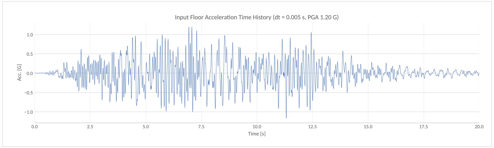
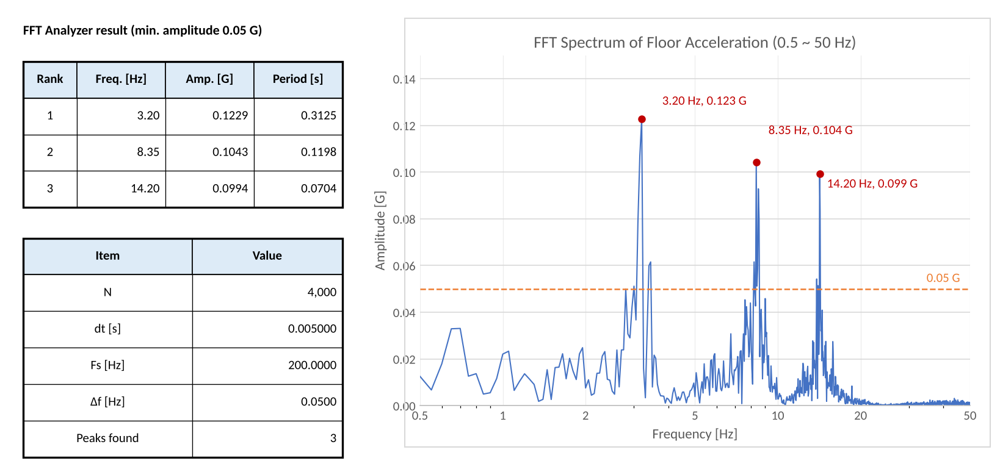

where
dt : time step between samples
t
0, t
N−1
: time of the first and last sample
N : number of data points
F
s
: sampling frequency
Δf : frequency resolution
f
Nyq
: Nyquist frequency
FFT results depend on the sampling conditions, so the time step (dt) and the number of points (N) are checked first.
Components above the Nyquist frequency, half of the sampling frequency Fs = 1/dt, are distorted by aliasing, and the frequency resolution is Fs/N.
Since the range of interest in seismic qualification is 0.5–50 Hz, the Nyquist frequency should be well above 50 Hz.
where
X[k] : FFT result at frequency bin k (complex)
x[n] : n-th sample of the time history
k, n : frequency bin index and sample index
N : number of data points
j : imaginary unit
f
k
: frequency of bin k
F
s
: sampling frequency
FFT is a fast way to compute the DFT, which breaks a time history into a sum of sine waves at different frequencies.
Each frequency bin corresponds to k·Fs/N, and the result is a complex number holding the magnitude and phase of that component.
This step reveals which frequencies are contained in the time signal.
where
P
2[k] : two-sided amplitude
P
1[k] : single-sided amplitude
|X[k]| : magnitude of the FFT result
N : number of data points
The FFT magnitude grows with the number of points, so it is divided by N to recover the actual amplitude.
For a real signal the positive and negative frequencies are symmetric, so only one side is kept and doubled to get the single-sided amplitude.
This lets the spectrum be read in the original acceleration unit (G).
where
P
1[k] : single-sided amplitude at bin k
h : minimum peak amplitude (0.05 G)
k
i
, k
j
: bin indices of two neighboring peaks
Δf : frequency resolution
G : acceleration in units of gravity
Frequencies where peaks appear in the spectrum are the dominant frequencies of the structure or the input.
The program marks a point as a peak when it is larger than its neighbors and above the minimum amplitude, and keeps a minimum spacing between peaks to filter out small peaks caused by noise.
The main frequencies to check in a seismic analysis are picked automatically this way.
This example analyzes a synthetic floor acceleration time history of a nuclear building (N = 4000, dt = 0.005 s, Fs = 200 Hz, PGA 1.20 G). The record was band-limited to 0.5-50 Hz and passed through three structural modes with 3 % damping. FFT Analyzer gives a frequency resolution of 0.05 Hz and finds the dominant peaks at 3.20 Hz (0.123 G), 8.35 Hz (0.104 G) and 14.20 Hz (0.099 G) above the minimum amplitude of 0.05 G.


Return to the FFT Analyzer Page